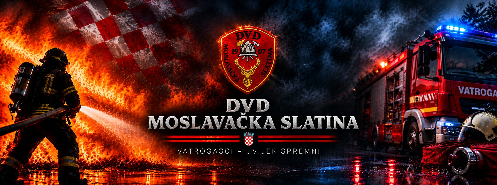
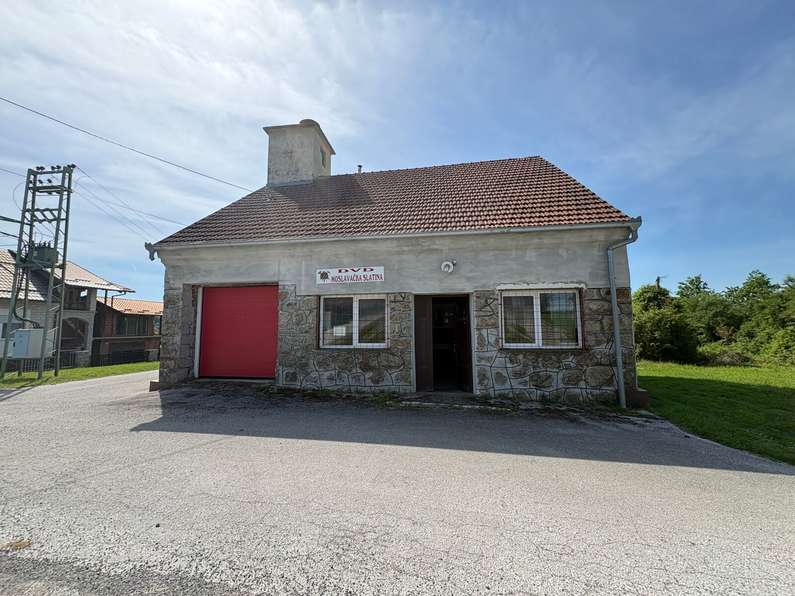
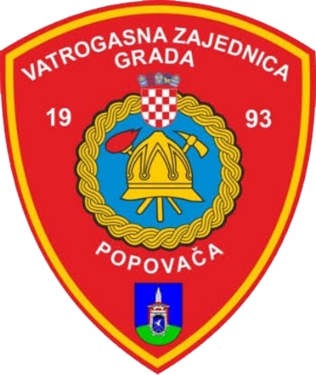
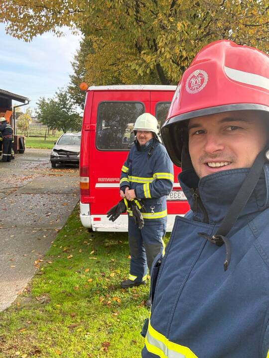
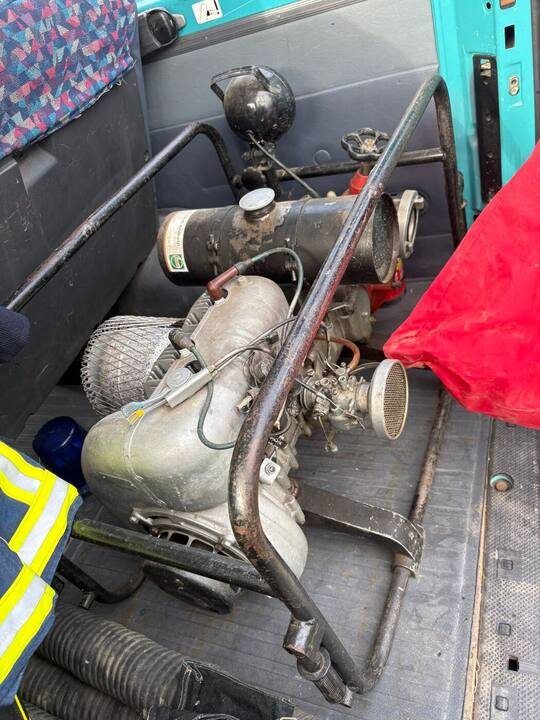
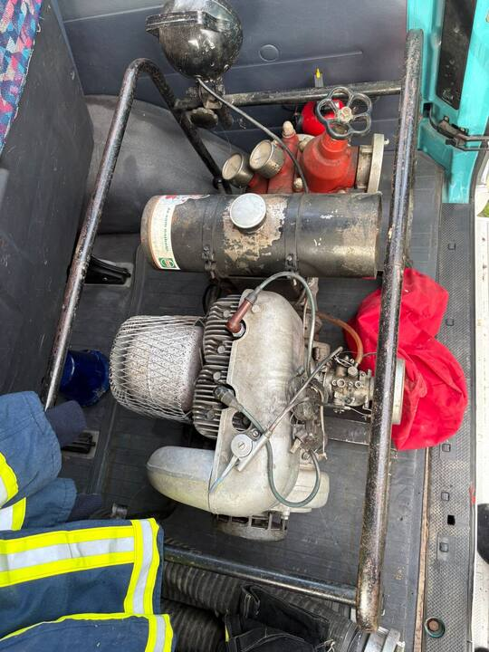
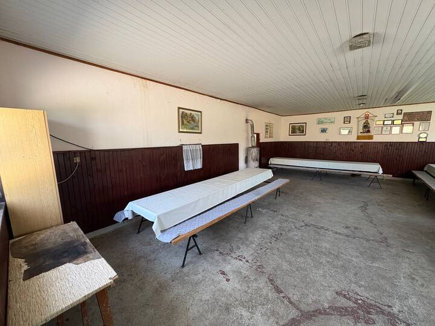
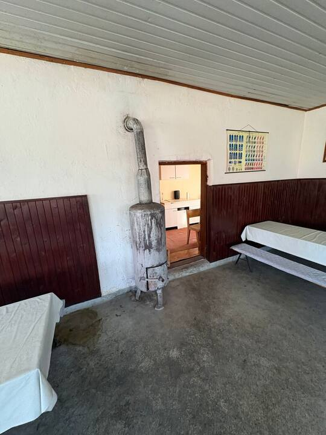
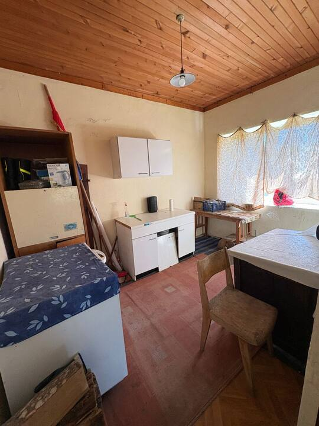

Gašenje požara
Brz odgovor na požare kuća, gospodarskih objekata i raslinja.

Vatrogasci – uvijek spremni. Čuvamo svoje mjesto već više od stotinu godina.

Naše društvo osnovano je 1907. godine u Moslavačkoj Slatini. Članovi svoje slobodno vrijeme daju zajednici: gase požare, pomažu u nesrećama i uče mlade kako se zaštititi.
Nitko nas ne plaća za to. Radimo jer nam je stalo do ljudi u svom mjestu.

Članica Vatrogasne zajednice grada Popovače.
Brz odgovor na požare kuća, gospodarskih objekata i raslinja.
Pomoć u prometnim nesrećama, spašavanje i otklanjanje opasnosti.
Pomažemo pri poplavama, olujama i drugim nepogodama.
Vježbe, predavanja i druženja za djecu i odrasle.
DVD Moslavačka Slatina vuče korijene iz 1907. godine, kako piše i na našem grbu. Društvo je članica Vatrogasne zajednice grada Popovače, a javni registar vodi ga kao udrugu od 19. siječnja 1998.
Središte društva je vatrogasni dom, kamena zgrada s crvenim garažnim vratima. U njemu su vozilo, oprema i prostorija u kojoj se članovi okupljaju.
Danas nas je oko 20. Na godišnjoj skupštini u veljači 2025. istaknuto je da je društvo izvršilo sve planirane aktivnosti: jedan požar u prošloj godini, preventivni rad s mještanima, dežurstva u svibnju (mjesecu zaštite od požara) i redovito održavanje opreme.
Imate li kroniku ili stare fotografije društva, javite nam se pa ćemo dopuniti ovaj dio.
Moslavačka Slatina je malo naselje u sastavu grada Popovače, u Moslavini (Sisačko-moslavačka županija). Prema popisu iz 2021. ima 68 stanovnika. O govoru ovoga kraja postoji i stručni rad, Goranski govor u Moslavini, koji obrađuje Gornju Jelensku i Moslavačku Slatinu.
Srednjovjekovni burg na jugozapadnim obroncima Moslavačke gore, kod Katoličkog Selišća, jedan od najbolje očuvanih u sjeverozapadnoj Hrvatskoj. Pripadao je Čuporima Moslavačkim, a kasnije Erdődyjima, a napušten je oko 1540. do 1545. zbog turskih napada. Istraživanja traju od 2012.
Ruševine starog grada u sjeverozapadnom dijelu Moslavačke gore, kod Ruškovice. Burg se spominje 1334. godine, a danas je obrastao šumom.
Regionalni park s planinarskim stazama i vidikovcima. U srednjem vijeku zvala se Garić, a na njoj su i ruševine Garić grada.
Zaštićeno močvarno područje. Jedan od dva ulaza u Lonjsko polje s moslavačke strane nalazi se kod Popovače.
Moslavina je poznata i po autohtonoj sorti vina škrlet. Prije posjeta provjerite dostupnost i oznake staza.
Primjeri objava. Uredite tekst i datume u index.html.
Članovi su održali zajedničku vježbu rukovanja opremom i vozilom.
Pozivamo mještane i djecu da razgledaju vatrogasni dom i opremu.
Podsjetnik kako izbjeći požare raslinja tijekom vrućina.
Nekoliko fotografija iz našeg doma i s vježbi. Sve fotografije su u galeriji.






Primamo nove članove svih generacija. Nije potrebno prethodno iskustvo. Nazovite nas ili nam pišite.
+385 98 920 7507DVD Moslavačka Slatina
Put kroz selo 52
44317 Moslavačka Slatina
Telefon: +385 98 920 7507
E-pošta: dvdmoslavackaslatina@gmail.com